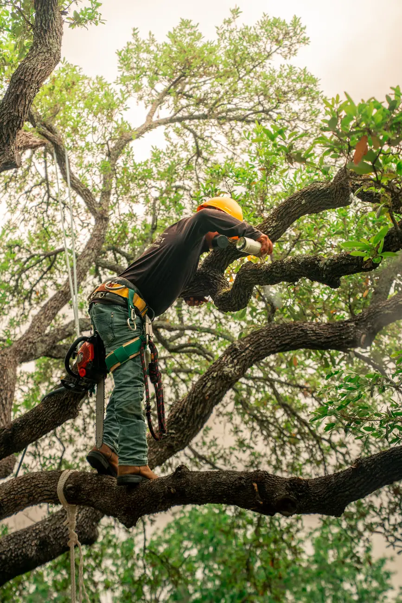
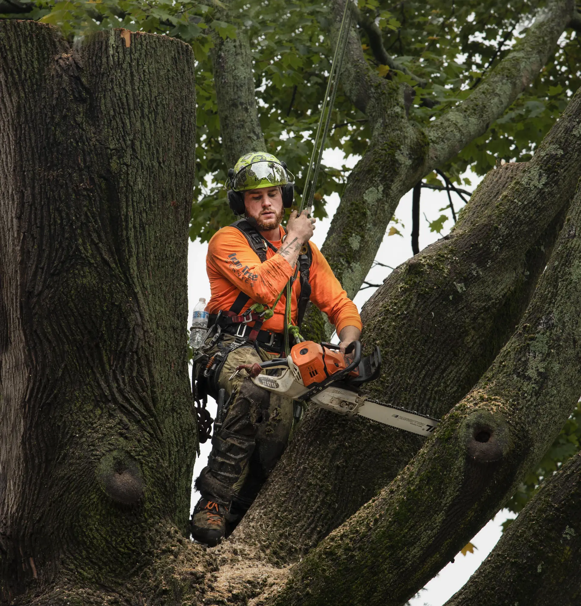
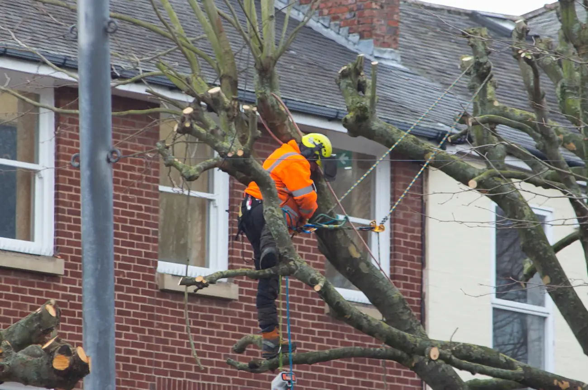
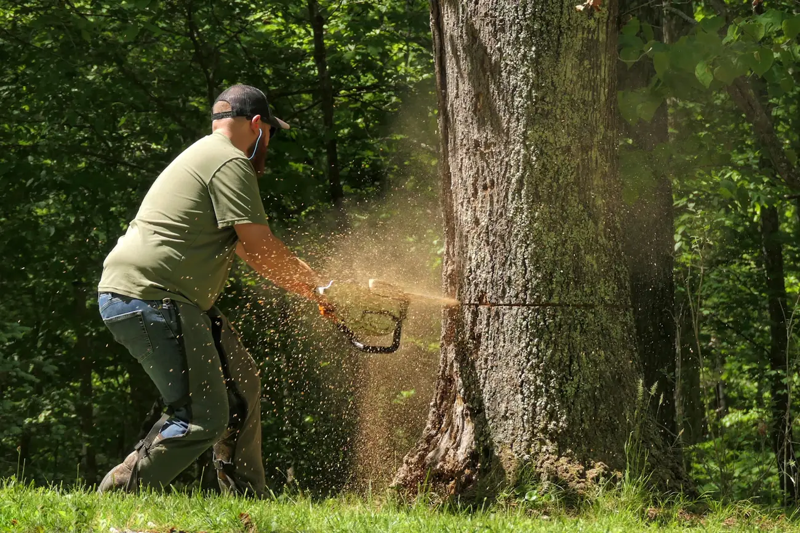
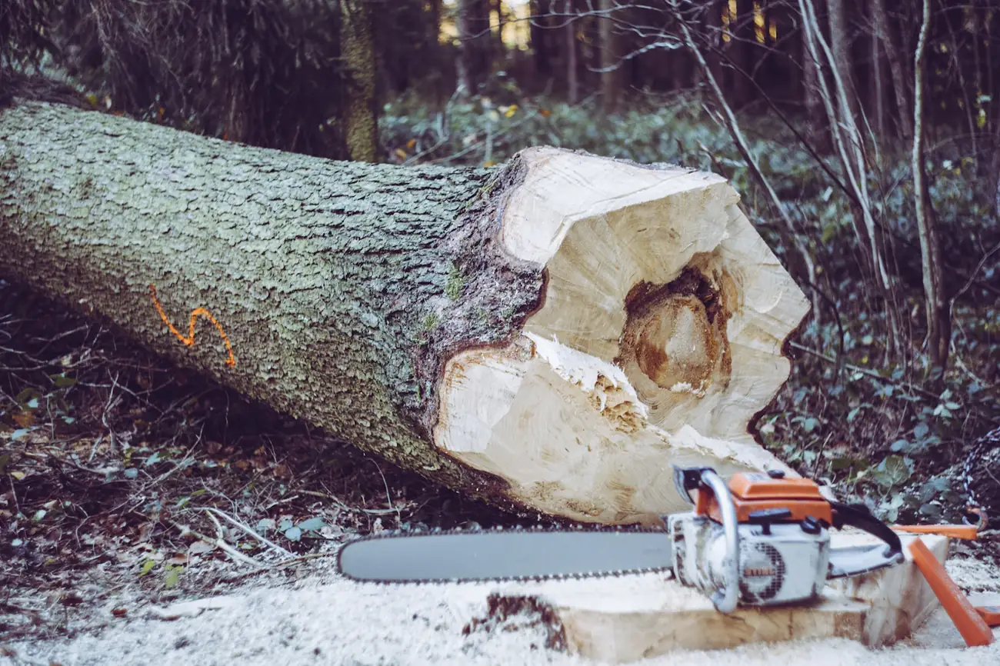
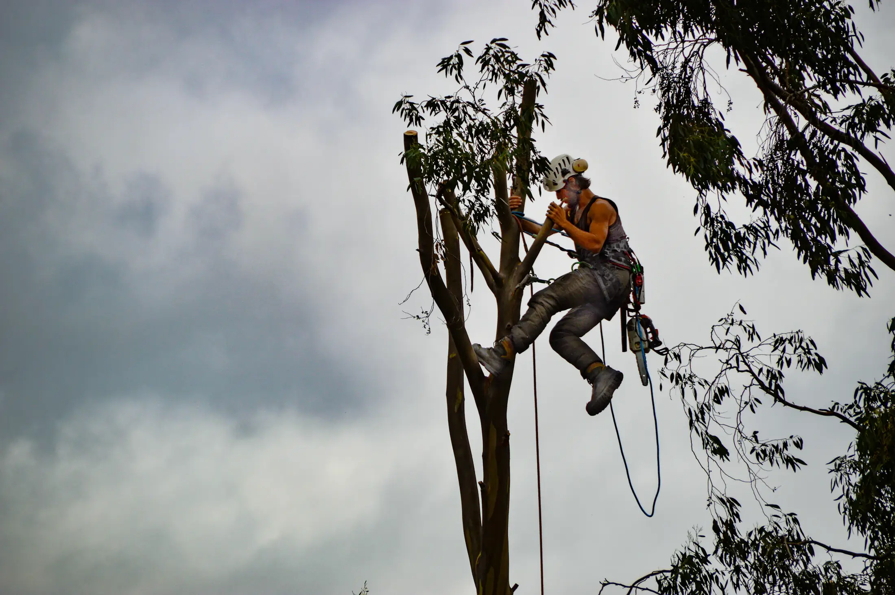
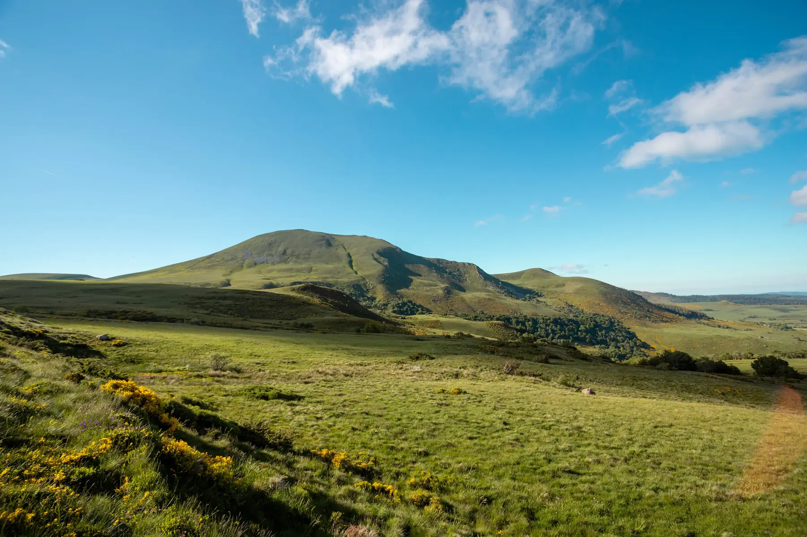

Élagage
Entretenir un arbre, accompagner son développement et intervenir sur les branches lorsque la situation le nécessite.
Demander un devis pour l'élagage
Élagage · Arboriculture · Puy-de-Dôme
Des arbres à entretenir, des branches à maîtriser, un extérieur à préserver. Découvrez les prestations de Franck David et demandez un devis pour votre projet.
Photographie d'illustration
Chaque arbre et chaque environnement demandent une approche adaptée. Découvrez les types d'interventions possibles et contactez Franck David pour étudier votre besoin.

Entretenir un arbre, accompagner son développement et intervenir sur les branches lorsque la situation le nécessite.
Demander un devis pour l'élagage
Adapter l'intervention à la forme de l'arbre, à son environnement et à son état apparent.
Demander un devis pour la taille et l'entretien
Étudier les situations dans lesquelles un arbre doit être retiré et les contraintes liées à son environnement.
Demander un devis pour l'abattage
Prévoir la gestion des branches et des rémanents selon les modalités convenues pour le chantier.
Demander un devis pour la gestion des branches
La proximité des bâtiments, les accès, les branches environnantes et les contraintes du site influencent la manière d'aborder un chantier. Une évaluation préalable permet de définir les besoins et les modalités de l'intervention.
Photographie d'illustration
Photographies d'illustration Ces images présentent le métier d'élagueur. Elles ne montrent pas des chantiers réalisés par Franck David et seront remplacées par ses propres réalisations.
Parcours indicatif d'une demande, adapté à chaque situation.
Vous expliquez votre besoin et la situation de votre terrain.
Les contraintes du site et les travaux souhaités sont étudiés.
Les prestations envisagées et les modalités sont précisées.
Le chantier est organisé selon ce qui a été convenu.

Franck David exerce son activité d'élagage dans le Puy-de-Dôme. Contactez-le pour préciser votre commune et vérifier si votre chantier entre dans sa zone d'intervention.
Puy-de-Dôme Auvergne
Vérifier ma communeDécrivez votre projet et prenez contact avec Franck David pour échanger sur les travaux à envisager.
Il prépare un e-mail avec vos informations dans votre logiciel de messagerie. Rien n'est envoyé ni enregistré par ce site : c'est vous qui vérifiez puis envoyez le message.